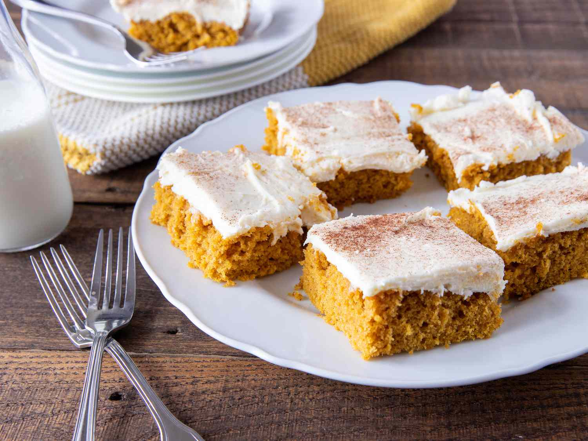

Pumpkin Bars

Irresistible Pumpkin Bars
Follow along to learn how to craft these delicious Pumpkin Bars, perfect for
halloween parties, fall evenings, or any time you crave a delicious treat
Ingredients
- 4 eggs
- 1 & 1/3 cup sugar
- 1 cup canola oil
- 1 can (15 oz) pumpkin
- 2 cups flour
- 2 tsp ground cinnamon
- 2 tsp baking powder
- 1 tsp salt
[for frosting]
- 1 pkg (80z) cream cheese, softened
- 1/4 cup butter, softened
- 1 tsp vanilla
- 1/2 pkg powdered sugar (1/2 a 2 lb bag)
Steps
- In a bowl, beat eggs, sugar, oil and pumpkin
- Combine flour, cinnamon, baking powder, baking soda & salt, then gradually
add to pumpkin mix
- Lightly coat jelly roll pan with cooking spray and pour mixture in
- Bake at 350F for 25-30 min
Home